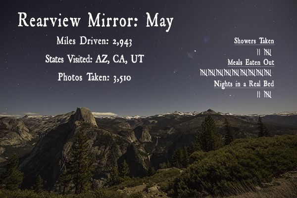

Rearview Mirror is a 12-part series. Each of the 12 posts represents one month of life on the road, an ode to the last 31 days. Buckle up and hang on to those armrests with all you've got, we're going fast.
We started out the month banging our heads against a hotel room wall in Scottsdale, Arizona. Once we found a temporary solution to the valet "incident," we got back on the move in a comfy rental RV. As we await Jolene's repair, nothing is keeping us from enjoying our time on the highway.

Numerical Breakdown — Month 5
Showers Taken12 — We have a shower in the RV and hardly use it. Is that gross?
Meals Eaten Out45 — Making up for lost time = less time to cook!
Nights in a Real Bed7 — The RV beds aren't real beds are they?
Miles Driven2,943 — The RV is slow.
States VisitedAZ, CA, UT — No new states this month. We couldn't stray far so we could be around to pick up the van. We're way behind "schedule" now!
Photos Taken3,510 — Justin: 2,252 | Adam: 1,258
Highlights
Adam celebrated his birthday a little late, but in the ocean.
Justin traded his old surfboard for something fishier.
Three days isn't nearly enough time in Yosemite.
Hanging out with the unsung heroes of our national parks made our Sequoia NP experience an amazing visit.
We won the lottery! We also won the slots!
Utah showed us its wetter, less desert-y side.
The Wave in Arizona was a desert oasis!
Memorial Day weekend at a national park teaches patience.
Thanks for reading our words, watching our vlogs, and looking at our pictures. Thanks for being a part of this journey.
About Adam Fricke
Although my destination may be uncertain, my direction is Always Forward. Photography, Videography, Writing, Music, Surfing, Beer. Not necessarily in that order. Follow me @AdamFricke